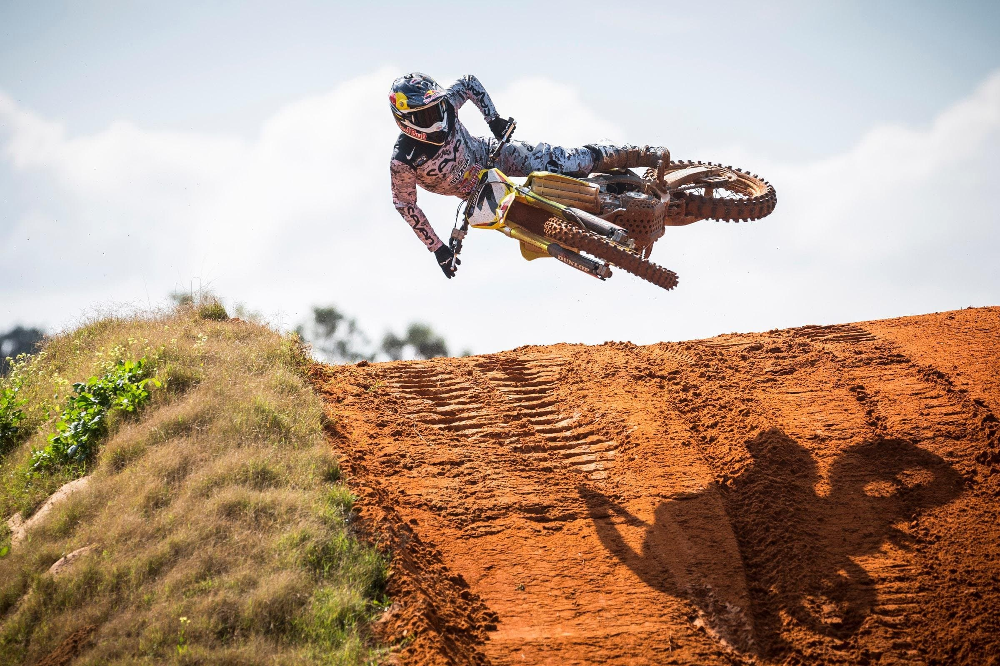

Motocross is a motorcycle racing sport in which riders compete on off-road courses using dirt bikes. Motocross was derived from motorcycle trials in the UK, by eliminating strict scoring and the delicate balancing aspects of trials. The objective of motocross racing is to simply complete a course in the fastest time possible.
The tracks used for motocross are specially designed with several ramps and turns. In each race, about 25 to 30 riders are allowed to take part. Races involve riding around the course for a fixed number of laps, where the rider to cross the finish line first is declared as the winner. Championship events have races in a heats format, where top riders qualify for the next round, until a final group of qualifiers are determined for the final race.
There are several major competitions conducted for the sport. The FIM Motocross World Championship is the most notable event for the sport that is conducted annually. The event features races for four classifications of motorcycle, and separate races are conducted for men and women. The other major competitions are AMA Motocross Championship, Motocross des Nations, and the British Motocross Championship, all of which are conducted annually, with races for multiple classifications, for both men and women.
